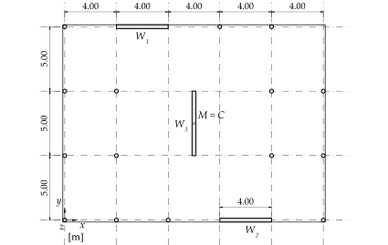
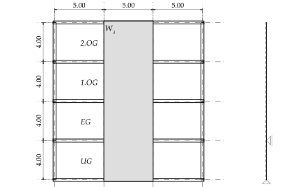
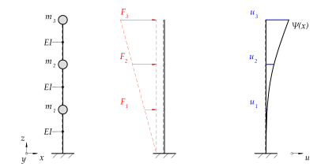
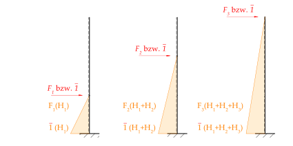
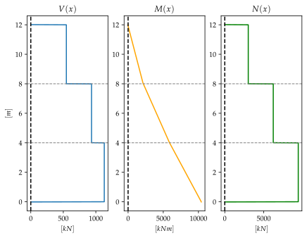
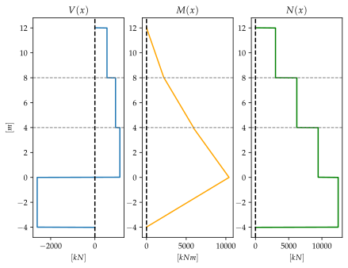
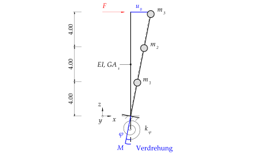
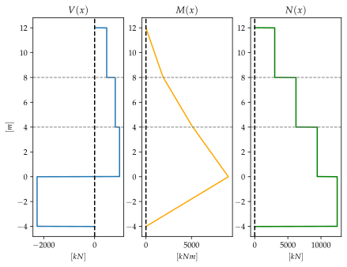

%run style_and_packages.ipynb18 Beispiel: Rayleigh-Quotient und Fundamentsteifigkeit beim Ersatzkraftverfahren
18.1 Aufgabenstellung
In Abbildung 18.1 ist ein Gebäudegrundriss dargestellt. Dieser wird durch drei Stahlbeton-Wandscheiben ausgesteift. Die Anordnung ist symmetrisch, das Steifigkeitszentrum stimmt mit dem Massenzentrum der Decke überein.

Das Untergeschoss gilt als steifer Kasten, folglich ist der Einspannungshorizont der Wandscheiben Oberkante UG. Es findet eine gewisse Einspannung der Wandscheiben in die Bodenplatte statt, je nach Ausbildung der Fundation. Diese kann man z.B. mit einer elastischen Einspannung (Drehfeder) modellieren. Die elastische Einspannung liegt im Bereich von 20% einer Volleinspannung. Im Beispiel wird diese als gelenkige Lagerung angenommen.

Die Modellierung in Abbildung 18.3 trifft folgende Annahmen:
- Die Decken sind gelenkig an die Tragwände angeschlossen
- Die Deckenscheiben wirken in ihrer Ebene als starre Scheiben
- Die Wandscheiben bzw. Tragwände sind in den Kellerkasten eingespannt, so dass die Modellierung als Kragarm gerechtfertigt ist
- Die Massen der Decken werden im Aufriss als Punktmassen am Kragarm abgebildet (Dabei werden die Massen der Wände pro Geschoss je zur Hälfte der Geschossmassen zugeordnet)
- Die Stützen tragen lediglich zum vertikalen Lastabtrag bei. Deren Steifigkeit kann vernachlässigt werden
Gesucht:
- Erste Eigenperiode in globaler Y-Richtung
- Ersatzkräfte durch das Ersatzkraftverfahren
Gegeben:
- Baugrundklasse \(B\)
- Erdbebenzone \(Z2\)
- Decken und Wände sind alle \(d\) stark
- Sämtliche Decken gelten als Wohnflächen (Lastermittlung - vereinfacht auch die Dachfläche)
- Reduktion der Biegesteifigkeit \(\gamma_{EI}\) zur Berücksichtigung der Rissbildung
rho_c, gamma_f, q,q_auflast_k, q_nutzlast_k = sp.symbols('rho_c, gamma_f, q, q_auflast_k, q_nutzlast_k')
H_1, H_2, H_3 = sp.symbols("H_1, H_2, H_3")
m_1, m_2, m_3 = sp.symbols('m_1, m_2, m_3')
gamma_EI = sp.symbols('gamma_EI')
F_1, F_2, F_3 = sp.symbols('F_1, F_2, F_3')
E, d, L_y, L_x, L_w1, L_w2, L_w3 = sp.symbols('E, d, L_y, L_x, L_w1, L_w2, L_w3')
C_1 = sp.symbols('C_1')
H = sp.symbols('H', positive=True)
u_0 = sp.symbols('u_0')
G_c, nu_c = sp.symbols('G_c, nu_c')
G_eff_sand, nu_sand = sp.symbols('G_eff_sand nu_sand')params = {
'E':30000 *unit.N/unit.mm**2,
'd':0.3*unit.m,
'L_y':5*unit.m,
'L_x':4*unit.m,
'L_w1':4*unit.m,
'L_w2':4*unit.m,
'L_w3':5*unit.m,
'q': 2.0,
'gamma_f': 1.0,
'q_nutzlast_k': 3*10**3*unit.N/unit.m**2,
'q_auflast_k': 1*10**3*unit.N/unit.m**2,
'H_1':4*unit.m,
'H_2':4*unit.m,
'H_3':4*unit.m,
'rho_c':25000*unit.N / unit.m**3,
'g':10 *unit.m/unit.second**2,
'gamma_EI':0.50,
'G_eff_sand':120*10**6*unit.N/unit.m**2,
'nu_sand':0.3,
}
params_plot = convert.param_value(params)
render.dict_to_table(params)| \(E = \frac{30000 \text{N}}{\text{mm}^{2}}\) | \(G_{eff sand} = \frac{120000000 \text{N}}{\text{m}^{2}}\) |
| \(H_{1} = 4 \text{m}\) | \(H_{2} = 4 \text{m}\) |
| \(H_{3} = 4 \text{m}\) | \(L_{w1} = 4 \text{m}\) |
| \(L_{w2} = 4 \text{m}\) | \(L_{w3} = 5 \text{m}\) |
| \(L_{x} = 4 \text{m}\) | \(L_{y} = 5 \text{m}\) |
| \(d = 0.3 \text{m}\) | \(g = \frac{10 \text{m}}{\text{s}^{2}}\) |
| \(\gamma_{EI} = 0.5\) | \(\gamma_{f} = 1.0\) |
| \(\nu_{sand} = 0.3\) | \(q = 2.0\) |
| \(q_{auflast k} = \frac{1000 \text{N}}{\text{m}^{2}}\) | \(q_{nutzlast k} = \frac{3000 \text{N}}{\text{m}^{2}}\) |
| \(\rho_{c} = \frac{25000 \text{N}}{\text{m}^{3}}\) |
18.2 Musterlösung
18.2.1 Lastermittlung
Gemäss Schweizerischer Ingenieur- und Architektenverein (SIA) (2020) Ziff. 16.5.2.3 sind ständige und quasiständige Lasten anzusetzen. Bei der Lastermittlung werden die Gewichtskräfte aus Eigenmassen und Auflasten ermittelt. Dazu werden pro Stockwerk die Gewichtskräfte der Wände definiert. Eine Punktmasse erhält jeweils die Hälfte der darunter- und darüber liegenden Wände. Für die Decke über 2.OG bleibt folglich nur eine Hälfte der Wände.
A_decke = 5*L_x* 3 * L_y
G_decke = A_decke * rho_c* d
G_waende_stock = (L_w1 +L_w2+L_w3)*H_1 * rho_c * d
Q_auflast_k = q_auflast_k * A_decke
Q_nutzlast_k = q_nutzlast_k * A_decke
psi_2 = 0.3
params['m_3'] = ((G_decke + Q_auflast_k+ G_waende_stock/2+psi_2 * Q_nutzlast_k)/g).subs(params)
params['m_2'] = ((G_decke + Q_auflast_k+ G_waende_stock+psi_2 * Q_nutzlast_k)/g).subs(params)
params['m_1'] = ((G_decke + Q_auflast_k+ G_waende_stock+psi_2 * Q_nutzlast_k)/g).subs(params)
render.eq_display('A_Decke', A_decke.subs(params).evalf(3),
'G_Decke_k', G_decke.subs(params).evalf(3),
'G_Waende_k', G_waende_stock.subs(params).evalf(3),
'Q_auflast_k', Q_auflast_k.subs(params).evalf(3),
'Q_nutzlast_k', Q_nutzlast_k.subs(params).evalf(3),
'psi_2', psi_2,
)
\[\begin{equation}A_{Decke} = 300.0 \text{m}^{2}\end{equation}\]
\[\begin{equation}G_{Decke k} = 2.25 \cdot 10^{6} \text{N}\end{equation}\]
\[\begin{equation}G_{Waende k} = 3.9 \cdot 10^{5} \text{N}\end{equation}\]
\[\begin{equation}Q_{auflast k} = 3.0 \cdot 10^{5} \text{N}\end{equation}\]
\[\begin{equation}Q_{nutzlast k} = 9.0 \cdot 10^{5} \text{N}\end{equation}\]
\[\begin{equation}\psi_{2} = 0.3\end{equation}\]
Daraus lassen sich die Punktmassen bestimmen:
render.eq_display('m_1', "(G_decke + Q_auflast_k+ G_Waende_k+psi_2 * Q_nutzlast_k)/g",
'm_1', m_1.subs(params).evalf(3),
'm_2', "(G_decke + Q_auflast_k+ G_Waende_k+psi_2 * Q_nutzlast_k)/g",
'm_2', m_2.subs(params).evalf(3),
'm_3', "(G_decke + Q_auflast_k+ G_Waende_k/2+psi_2 * Q_nutzlast_k)/g",
'm_3', m_3.subs(params).evalf(3))\[\begin{equation}m_{1} = \frac{G_{Waende k} + G_{decke} + Q_{auflast k} + Q_{nutzlast k} \psi_{2}}{g}\end{equation}\]
\[\begin{equation}m_{1} = \frac{3.21 \cdot 10^{5} \text{N} \text{s}^{2}}{\text{m}}\end{equation}\]
\[\begin{equation}m_{2} = \frac{G_{Waende k} + G_{decke} + Q_{auflast k} + Q_{nutzlast k} \psi_{2}}{g}\end{equation}\]
\[\begin{equation}m_{2} = \frac{3.21 \cdot 10^{5} \text{N} \text{s}^{2}}{\text{m}}\end{equation}\]
\[\begin{equation}m_{3} = \frac{\frac{G_{Waende k}}{2} + G_{decke} + Q_{auflast k} + Q_{nutzlast k} \psi_{2}}{g}\end{equation}\]
\[\begin{equation}m_{3} = \frac{3.02 \cdot 10^{5} \text{N} \text{s}^{2}}{\text{m}}\end{equation}\]
18.2.2 Biegesteifigkeit
Die Biegesteifigkeit wird in Y-Richtung bestimmt. Es wird lediglich Wand 3 berücksichtigt. Die Reduktion zur Berücksichtigung der Rissbildung ist ebenfalls miteinbezogen.
I_y = L_w3 ** 3 * d / 12
EI_y_ersatz = I_y * E * gamma_EI
render.eq_display(
'I_y' , 'L_w3 ** 3 * d / 12',
'I_y' , I_y.subs(params).evalf(3),
'EI_y_ersatz', I_y * E * gamma_EI,
'EI_y_ersatz', EI_y_ersatz.subs(params).evalf(3).simplify())\[\begin{equation}I_{y} = \frac{L_{w3}^{3} d}{12}\end{equation}\]
\[\begin{equation}I_{y} = 3.13 \text{m}^{4}\end{equation}\]
\[\begin{equation}EI_{y ersatz} = \frac{E L_{w3}^{3} d \gamma_{EI}}{12}\end{equation}\]
\[\begin{equation}EI_{y ersatz} = 4.69 \cdot 10^{10} \text{m}^{2} \text{N}\end{equation}\]
18.2.3 Formfunktion aus der Biegelinie
Als geeignete statische Belastung für die Abbildung der Eigenform eignet sich eine lineare dreiecksförmige Verteilung von Einzellasten. Diese bewirken am Stab eine Verschiebung \(u_i\) auf Höhe der Geschossdecken.
18.2.3.1 Rayleigh-Quotient
Gemäss dem Arbeitssatz gilt: Die von den äusseren Kräften \(F_i\) auf ihren Verschiebungswegen \(u_i\) geleistete Arbeit entspricht der inneren Arbeit, welche von den Schnittgrössen auf den Dehnungen im Querschnitt geleistet wird.
\[ W_a = W_i \tag{18.1}\]
Dies führt zur Gleichung 18.2:
\[ \frac{1}{2} \sum_{i=1}^n F_i\cdot u_i=\int_0^L \frac{1}{2} EI \cdot u''(x)^2 \cdot d_x \tag{18.2}\]
Unter Berücksichtigung, dass die Stäbe als masselos zu betrachten sind (da die Massen der Wände zu den Punktmassen dazugezählt sind), lässt sich die Eigenkreisfrequenz gemäss Gleichung 18.3 beschreiben.
\[ \omega_1^2 = \frac{\frac{1}{2}\sum_{i=1}^n F_i \cdot u_i}{\frac{1}{2}\sum_{i=1}^n m_i \cdot u_i^2} = \frac{\text{max. potentielle Energie}}{\text{max. kinetische Energie}} \tag{18.3}\]
Zur Ermittlung der Biegelinie, bzw. der Verformungen \(u_i\) wird das gleiche Vorgehen wie bei der Ermittlung der Nachgiebigkeitsmatrix angewendet.

Daraus lassen sich die Kräftezustände beschreiben:

Durch die Anwendung der Arbeitsgleichung lassen sich die jeweiligen Deformationen bestimmen. Die Indizes \(ij\) in \(\delta_{ij}\) bedeuten \(i\) Position der realen Einwirkung und \(j\) Position der fiktiven Einwirkung. Dies resultiert zur Nachgiebigkeitsmatrix. Invertiert folgt daraus die Steifigkeitsmatrix. Mit den Einwirkungen multipliziert folgt die Deformation an jedem Punkt.
Zur Bestimmung der Nachgiebigkeitsmatrix werden die Kräfte \(F_i = 1\) gesetzt. Durch Multiplikation mit dem effektiven Kraftvektor resultieren die entsprechenden Verformungen.
F_1_n, F_2_n, F_3_n = 1 ,1 ,1def delta_ij(M, m_l, m_r, L):
return (sp.Rational(1,6) / EI_y_ersatz) * M*(m_l+2*m_r)*Ldelta_11 = delta_ij(F_1_n * H_1, 0, H_1, H_1)
delta_22 = delta_ij(F_2_n * (H_1+H_2), 0, (H_1+H_2), (H_1+H_2))
delta_33 = delta_ij(F_3_n * (H_1+H_2+H_3), 0, (H_1+H_2+H_3), (H_1+H_2+H_3))
delta_12 = delta_ij(F_1_n*H_1, H_1, H_1+H_2, H_1)
delta_21 = delta_12
delta_13 = delta_ij(F_1_n*H_1,H_1+H_2, H_1+H_2+H_3, H_1)
delta_31 = delta_13
delta_23 = delta_ij(F_2_n*(H_1+H_2), H_3, H_1+H_2+H_3, H_1 + H_2)
delta_32 = delta_23
render.eq_display('delta_11', delta_11,
'delta_12', delta_12,
'delta_13', delta_13,
'delta_21', delta_21,
'delta_22', delta_22,
'delta_23', delta_23,
'delta_31', delta_31,
'delta_32', delta_32,
'delta_33', delta_33,
)\[\begin{equation}\delta_{11} = \frac{4 H_{1}^{3}}{E L_{w3}^{3} d \gamma_{EI}}\end{equation}\]
\[\begin{equation}\delta_{12} = \frac{2 H_{1}^{2} \cdot \left(3 H_{1} + 2 H_{2}\right)}{E L_{w3}^{3} d \gamma_{EI}}\end{equation}\]
\[\begin{equation}\delta_{13} = \frac{2 H_{1}^{2} \cdot \left(3 H_{1} + 3 H_{2} + 2 H_{3}\right)}{E L_{w3}^{3} d \gamma_{EI}}\end{equation}\]
\[\begin{equation}\delta_{21} = \frac{2 H_{1}^{2} \cdot \left(3 H_{1} + 2 H_{2}\right)}{E L_{w3}^{3} d \gamma_{EI}}\end{equation}\]
\[\begin{equation}\delta_{22} = \frac{2 \left(H_{1} + H_{2}\right)^{2} \cdot \left(2 H_{1} + 2 H_{2}\right)}{E L_{w3}^{3} d \gamma_{EI}}\end{equation}\]
\[\begin{equation}\delta_{23} = \frac{2 \left(H_{1} + H_{2}\right)^{2} \cdot \left(2 H_{1} + 2 H_{2} + 3 H_{3}\right)}{E L_{w3}^{3} d \gamma_{EI}}\end{equation}\]
\[\begin{equation}\delta_{31} = \frac{2 H_{1}^{2} \cdot \left(3 H_{1} + 3 H_{2} + 2 H_{3}\right)}{E L_{w3}^{3} d \gamma_{EI}}\end{equation}\]
\[\begin{equation}\delta_{32} = \frac{2 \left(H_{1} + H_{2}\right)^{2} \cdot \left(2 H_{1} + 2 H_{2} + 3 H_{3}\right)}{E L_{w3}^{3} d \gamma_{EI}}\end{equation}\]
\[\begin{equation}\delta_{33} = \frac{2 \left(H_{1} + H_{2} + H_{3}\right)^{2} \cdot \left(2 H_{1} + 2 H_{2} + 2 H_{3}\right)}{E L_{w3}^{3} d \gamma_{EI}}\end{equation}\]
Eingesetzt in die Nachgiebigkeitsmatrix und mit dem Kraftvektor multipliziert:
params['F_1'] = 1000*unit.N
params['F_2'] = 2000*unit.N
params['F_3'] = 3000*unit.ND_matrix = sp.Matrix([[delta_11, delta_12, delta_13],[delta_21, delta_22, delta_23],[delta_31, delta_32, delta_33]])
F_vektor = sp.Matrix([[F_1],[F_2],[F_3]])
u_vektor = D_matrix * F_vektor
render.eq_display(
sp.MatrixSymbol('D', 3,3),
sp.simplify(D_matrix),
sp.MatrixSymbol('D', 3,3),
unit.convert_to(sp.simplify(D_matrix.subs(params)).evalf(3), unit.mm),
sp.MatrixSymbol('F', 3,1), F_vektor.subs(params),
'u', 'D * F',
sp.MatrixSymbol('u', 3,1), unit.convert_to(sp.simplify(u_vektor.subs(params)).evalf(3), unit.mm))\[\begin{equation}\mathbf{D} = \left[\begin{matrix}\frac{4 H_{1}^{3}}{E L_{w3}^{3} d \gamma_{EI}} & \frac{H_{1}^{2} \cdot \left(6 H_{1} + 4 H_{2}\right)}{E L_{w3}^{3} d \gamma_{EI}} & \frac{H_{1}^{2} \cdot \left(6 H_{1} + 6 H_{2} + 4 H_{3}\right)}{E L_{w3}^{3} d \gamma_{EI}}\\\frac{H_{1}^{2} \cdot \left(6 H_{1} + 4 H_{2}\right)}{E L_{w3}^{3} d \gamma_{EI}} & \frac{4 \left(H_{1} + H_{2}\right)^{3}}{E L_{w3}^{3} d \gamma_{EI}} & \frac{\left(H_{1} + H_{2}\right)^{2} \cdot \left(4 H_{1} + 4 H_{2} + 6 H_{3}\right)}{E L_{w3}^{3} d \gamma_{EI}}\\\frac{H_{1}^{2} \cdot \left(6 H_{1} + 6 H_{2} + 4 H_{3}\right)}{E L_{w3}^{3} d \gamma_{EI}} & \frac{\left(H_{1} + H_{2}\right)^{2} \cdot \left(4 H_{1} + 4 H_{2} + 6 H_{3}\right)}{E L_{w3}^{3} d \gamma_{EI}} & \frac{4 \left(H_{1} + H_{2} + H_{3}\right)^{3}}{E L_{w3}^{3} d \gamma_{EI}}\end{matrix}\right]\end{equation}\]
\[\begin{equation}\mathbf{D} = \left[\begin{matrix}\frac{4.55 \cdot 10^{-7} \text{mm}}{\text{N}} & \frac{1.14 \cdot 10^{-6} \text{mm}}{\text{N}} & \frac{1.82 \cdot 10^{-6} \text{mm}}{\text{N}}\\\frac{1.14 \cdot 10^{-6} \text{mm}}{\text{N}} & \frac{3.64 \cdot 10^{-6} \text{mm}}{\text{N}} & \frac{6.37 \cdot 10^{-6} \text{mm}}{\text{N}}\\\frac{1.82 \cdot 10^{-6} \text{mm}}{\text{N}} & \frac{6.37 \cdot 10^{-6} \text{mm}}{\text{N}} & \frac{1.23 \cdot 10^{-5} \text{mm}}{\text{N}}\end{matrix}\right]\end{equation}\]
\[\begin{equation}\mathbf{F} = \left[\begin{matrix}1000 \text{N}\\2000 \text{N}\\3000 \text{N}\end{matrix}\right]\end{equation}\]
\[\begin{equation}u = D F\end{equation}\]
\[\begin{equation}\mathbf{u} = \left[\begin{matrix}0.00819 \text{mm}\\0.0275 \text{mm}\\0.0514 \text{mm}\end{matrix}\right]\end{equation}\]
18.2.3.1.1 Alternative
Alternativ kann die Nachgiebigkeitsmatrix mit dem folgenden Bildungsgesetz ermitteln. Dies gilt nur bei gleichen Stockwerkshöhen!
\[ D_{ij} = \frac{H^3}{6EI}\cdot [j^2 \cdot(3\cdot i - j)] \tag{18.4}\]
vereinfacht: \[ D_{ij} = v\cdot \Delta \tag{18.5}\]
D_bildung = sp.Matrix([[2,5,8],[5,16,28],[8,28,54]])
v_term = H_1*H_2*H_3 / (6 * EI_y_ersatz)
render.eq_display(
'v', 'H_1*H_2*H_3 / (6 * EI_y_ersatz)',
sp.MatrixSymbol('Delta',3,3), D_bildung,
sp.MatrixSymbol('D', 3,3), D_bildung*v_term,
sp.MatrixSymbol('D', 3,3),unit.convert_to(sp.simplify((D_bildung*v_term).subs(params).evalf(3)),unit.mm),
)\[\begin{equation}v = \frac{H_{1} H_{2} H_{3}}{6 EI_{y ersatz}}\end{equation}\]
\[\begin{equation}\mathbf{\Delta} = \left[\begin{matrix}2 & 5 & 8\\5 & 16 & 28\\8 & 28 & 54\end{matrix}\right]\end{equation}\]
\[\begin{equation}\mathbf{D} = \left[\begin{matrix}\frac{4 H_{1} H_{2} H_{3}}{E L_{w3}^{3} d \gamma_{EI}} & \frac{10 H_{1} H_{2} H_{3}}{E L_{w3}^{3} d \gamma_{EI}} & \frac{16 H_{1} H_{2} H_{3}}{E L_{w3}^{3} d \gamma_{EI}}\\\frac{10 H_{1} H_{2} H_{3}}{E L_{w3}^{3} d \gamma_{EI}} & \frac{32 H_{1} H_{2} H_{3}}{E L_{w3}^{3} d \gamma_{EI}} & \frac{56 H_{1} H_{2} H_{3}}{E L_{w3}^{3} d \gamma_{EI}}\\\frac{16 H_{1} H_{2} H_{3}}{E L_{w3}^{3} d \gamma_{EI}} & \frac{56 H_{1} H_{2} H_{3}}{E L_{w3}^{3} d \gamma_{EI}} & \frac{108 H_{1} H_{2} H_{3}}{E L_{w3}^{3} d \gamma_{EI}}\end{matrix}\right]\end{equation}\]
\[\begin{equation}\mathbf{D} = \left[\begin{matrix}\frac{4.55 \cdot 10^{-7} \text{mm}}{\text{N}} & \frac{1.14 \cdot 10^{-6} \text{mm}}{\text{N}} & \frac{1.82 \cdot 10^{-6} \text{mm}}{\text{N}}\\\frac{1.14 \cdot 10^{-6} \text{mm}}{\text{N}} & \frac{3.64 \cdot 10^{-6} \text{mm}}{\text{N}} & \frac{6.37 \cdot 10^{-6} \text{mm}}{\text{N}}\\\frac{1.82 \cdot 10^{-6} \text{mm}}{\text{N}} & \frac{6.37 \cdot 10^{-6} \text{mm}}{\text{N}} & \frac{1.23 \cdot 10^{-5} \text{mm}}{\text{N}}\end{matrix}\right]\end{equation}\]
Die durch das Bildungsgesetz ermittelte Nachgiebigkeitsmatrix entspricht, der mittels der Arbeitsgleichung ermittelten.
18.2.3.2 Eigenkreisfrequenz
Diese kann nach Gleichung 18.3 ermittelt werden.
E_pot = sum(u_vektor.multiply_elementwise(F_vektor))
M_vektor = sp.Matrix([[m_1],[m_2],[m_3]])
E_kin = sum(u_vektor.multiply_elementwise(u_vektor).multiply_elementwise(M_vektor))
render.eq_display(
'E_pot', E_pot.subs(params).simplify().evalf(3),
'E_kin', E_kin.subs(params).simplify().evalf(3)
)\[\begin{equation}E_{pot} = 0.218 \text{m} \text{N}\end{equation}\]
\[\begin{equation}E_{kin} = 0.00106 \text{m} \text{N} \text{s}^{2}\end{equation}\]
omega_1 = sp.sqrt(E_pot / E_kin)
f_1 = omega_1 / 2 / sp.pi
T_1 = 1 / f_1
render.eq_display(
'omega_1', omega_1.subs(params).simplify().evalf(3),
'f_1', f_1.subs(params).simplify().evalf(3),
'T_1', T_1.subs(params).simplify().evalf(3)
)\[\begin{equation}\omega_{1} = \frac{14.3}{\text{s}}\end{equation}\]
\[\begin{equation}f_{1} = \frac{2.28}{\text{s}}\end{equation}\]
\[\begin{equation}T_{1} = 0.439 \text{s}\end{equation}\]
18.2.3.3 Bemessungsspektrum
a_gd = 1.0*unit.m /unit.second**2S_d_y = bemessungsspektrum(a_gd, T_1.subs(params).simplify().evalf(3), params['q'], params['gamma_f'], Baugrundklasse='B')
render.eq_display('S_d_y', S_d_y.evalf(3))| \(S = 1.2\) | \(T_{B} = 0.08 \text{s}\) |
| \(T_{C} = 0.35 \text{s}\) | \(T_{D} = 2.0 \text{s}\) |
| \(a_{gd} = \frac{1.0 \text{m}}{\text{s}^{2}}\) | \(g = \frac{10.0 \text{m}}{\text{s}^{2}}\) |
| \(\gamma_{f} = 1.0\) | \(q = 2.0\) |
\[\begin{equation}S_{d} = \frac{2.5 S_{} T_{C} a_{gd} \gamma_{f}}{T g q}\end{equation}\]
\[\begin{equation}S_{d y} = 0.12\end{equation}\]
18.2.3.4 Gesamt-Ersatzkraft
Die Stockwerksquerkraft resultiert nach Norm aus Gleichung 18.6.
\[ F_d = S_d \cdot \sum_{j=1} (G_k + \psi_2 \cdot Q_k)_j \tag{18.6}\]
Aufgeteilt auf die Geschosse wird diese nach Gleichung 18.7.
\[ F_{d,i} = \frac{z_i \sum_{i=1} (G_k + \psi_2 \cdot Q_k)_i}{\sum_{j=1} z_j\cdot(G_k + \psi_2 \cdot Q_k)_j} \cdot F_d \tag{18.7}\]
Der Term der Gleichung 18.8 entspricht den Punktmassen.
\[ G_k + \psi_2 \cdot Q_k \tag{18.8}\]
Die Ersatzkraft greift am Massenschwerpunkt der Decke an.
F_d_y = np.sum(np.array([m_1, m_2, m_3])*g*S_d_y)
render.eq_display('F_d_y', F_d_y.subs(params).evalf(3))\[\begin{equation}F_{d y} = 1.13 \cdot 10^{6} \text{N}\end{equation}\]
H_masse_i = np.array([(H_1) * m_1,(H_1+H_2) * m_2,(H_1+H_2+H_3) * m_3])
F_y_i = H_masse_i / np.sum(H_masse_i) * F_d_y
F_y_i_dict = {f'F_y{i+1}': F_y_i[i].subs(params).evalf(3) for i in range(len(F_y_i))}
render.dict_to_table(F_y_i_dict)| \(F_{y1} = 1.94 \cdot 10^{5} \text{N}\) | \(F_{y2} = 3.88 \cdot 10^{5} \text{N}\) |
| \(F_{y3} = 5.47 \cdot 10^{5} \text{N}\) |
18.2.3.5 Schnittgrössen
params_plot = convert.param_value(params)
# Querkraft
F_y_i = list(F_y_i_dict.values())[::-1]
V_max = [F_y_i[0], F_y_i[0]+F_y_i[1],F_y_i[0]+F_y_i[1]+F_y_i[2]][::-1]
V_x = sp.Piecewise((V_max[0].subs(params)/unit.N, ((x>0)&(x<=H_1.subs(params_plot)))), (V_max[1].subs(params)/unit.N, ((x>=H_1.subs(params_plot))&(x<=(H_1+H_2).subs(params_plot)))), (V_max[2].subs(params)/unit.N, ((x>=(H_1+H_2).subs(params_plot))&(x<=(H_1+H_2+H_3).subs(params_plot)))), (0,True))
# Biegemoment
M_x = sp.integrate(-V_x, x) + C_1
C_1_solve = sp.solve(M_x.subs(x, (H_1+H_2+H_3).subs(params_plot)), C_1)[0]
M_x = M_x.subs(C_1, C_1_solve)
# Normalkraft
g = 10*unit.m/unit.second**2
N_x = sp.Piecewise(((m_1+m_2+m_3).subs(params)*g/unit.N, ((x>0)&(x<=H_1.subs(params_plot)))),((m_3+m_2).subs(params)*g/unit.N, ((x>=H_1.subs(params_plot))&(x<=(H_1+H_2).subs(params_plot)))),((m_3).subs(params)*g/unit.N, ((x>=(H_1+H_2).subs(params_plot))&(x<=(H_1+H_2+H_3).subs(params_plot)))), (0,True))
# Numerische Daten generieren
x_array = np.linspace(-0.01, float((H_1+H_2+H_3+.01).subs(params_plot)), 1000)
V_x_lamb = sp.lambdify(x, V_x)
V_x_array = V_x_lamb(x_array)
M_x_lamb = sp.lambdify(x,M_x)
M_x_array = M_x_lamb(x_array)
N_x_lamb = sp.lambdify(x,N_x)
N_x_array = N_x_lamb(x_array)
# Figure und Axes erstellen
fig, (ax1, ax2, ax3) = plt.subplots(1, 3)
# Ersten Plot erstellen
ax1.plot(V_x_array/1000, x_array)
ax1.set_title('$V(x)$')
## Horizontale Linien
ax1.axhline(H_1.subs(params_plot),linestyle='dashed', color='gray',linewidth=1)
ax1.axhline((H_1+H_2).subs(params_plot),linestyle='dashed', color='gray',linewidth=1)
ax1.set_xlabel('$[kN]$')
ax1.set_ylabel('$[m]$')
ax1.axvline(0,linestyle='dashed', color='black')
# Zweiten Plot erstellen
ax2.plot(M_x_array/1000, x_array, color='orange')
ax2.set_title('$M(x)$')
## Horizontale Linien
ax2.axhline(H_1.subs(params_plot),linestyle='dashed', color='gray',linewidth=1)
ax2.axhline((H_1+H_2).subs(params_plot),linestyle='dashed', color='gray',linewidth=1)
ax2.set_xlabel('$[kNm]$')
ax2.axvline(0,linestyle='dashed', color='black')
# Dritten Plot erstellen
ax3.plot(N_x_array/1000, x_array, color='green')
ax3.set_title('$N(x)$')
ax3.set_xlabel('$[kN]$')
## Horizontale Linien
ax3.axhline(H_1.subs(params_plot),linestyle='dashed', color='gray',linewidth=1)
ax3.axhline((H_1+H_2).subs(params_plot),linestyle='dashed', color='gray',linewidth=1)
ax3.axvline(0,linestyle='dashed', color='black')
# Plots anzeigen
plt.show()
Unter der Annahme das der Einspanngrad der Tragwand in die biegeweiche Bodenplatte zu vernachlässigen ist, kann das Biegemoment am Kragarm in ein Kräftepaar mit der Stockwerkshöhe im UG von 4m aufgelöst werden. Entsprechend dem System in Abbildung 18.2. Somit ergeben sich nachfolgend dargestellten Schnittkräfte. Elastische Einspanngrade in die Bodenplatte können in Abhängigkeit der Steifigkeit der Fundation berücksichtigt werden. Zu beachten sind die hohen Querkräfte der Tragwand im UG. Da infolge Querkraft ein sprödes Versagen erfolgt, ist bei der Querkraft-Bemessung besonders Beachtung zu schenken.
params_plot = convert.param_value(params)
# Querkraft
F_y_i = list(F_y_i_dict.values())[::-1]
V_max = [F_y_i[0], F_y_i[0]+F_y_i[1],F_y_i[0]+F_y_i[1]+F_y_i[2]][::-1]
V_x = sp.Piecewise((-np.sum(V_max).subs(params)/unit.N, ((x<0)&(x>=-H_1.subs(params_plot)))),(V_max[0].subs(params)/unit.N, ((x>0)&(x<=H_1.subs(params_plot)))), (V_max[1].subs(params)/unit.N, ((x>=H_1.subs(params_plot))&(x<=(H_1+H_2).subs(params_plot)))), (V_max[2].subs(params)/unit.N, ((x>=(H_1+H_2).subs(params_plot))&(x<=(H_1+H_2+H_3).subs(params_plot)))), (0,True))
# Biegemoment
M_x = sp.integrate(-V_x, x) + C_1
C_1_solve = sp.solve(M_x.subs(x, (H_1+H_2+H_3).subs(params_plot)), C_1)[0]
M_x = M_x.subs(C_1, C_1_solve)
# Normalkraft
g = 10*unit.m/unit.second**2
N_x = sp.Piecewise(((m_1+m_2+m_3*2).subs(params)*g/unit.N, ((x<0)&(x>=-H_1.subs(params_plot)))),((m_1+m_2+m_3).subs(params)*g/unit.N, ((x>0)&(x<=H_1.subs(params_plot)))),((m_3+m_2).subs(params)*g/unit.N, ((x>=H_1.subs(params_plot))&(x<=(H_1+H_2).subs(params_plot)))),((m_3).subs(params)*g/unit.N, ((x>=(H_1+H_2).subs(params_plot))&(x<=(H_1+H_2+H_3).subs(params_plot)))), (0,True))
# Numerische Daten generieren
x_array = np.linspace(float((-H_1-.01).subs(params_plot)), float((H_1+H_2+H_3+.01).subs(params_plot)), 1000)
V_x_lamb = sp.lambdify(x, V_x)
V_x_array = V_x_lamb(x_array)
M_x_lamb = sp.lambdify(x,M_x)
M_x_array = M_x_lamb(x_array)
N_x_lamb = sp.lambdify(x,N_x)
N_x_array = N_x_lamb(x_array)
# Figure und Axes erstellen
fig, (ax1, ax2, ax3) = plt.subplots(1, 3)
# Ersten Plot erstellen
ax1.plot(V_x_array/1000, x_array)
ax1.set_title('$V(x)$')
## Horizontale Linien
ax1.axhline(H_1.subs(params_plot),linestyle='dashed', color='gray',linewidth=1)
ax1.axhline((H_1+H_2).subs(params_plot),linestyle='dashed', color='gray',linewidth=1)
ax1.set_xlabel('$[kN]$')
ax1.set_ylabel('$[m]$')
ax1.axvline(0,linestyle='dashed', color='black')
# Zweiten Plot erstellen
ax2.plot(M_x_array/1000, x_array, color='orange')
ax2.set_title('$M(x)$')
## Horizontale Linien
ax2.axhline(H_1.subs(params_plot),linestyle='dashed', color='gray',linewidth=1)
ax2.axhline((H_1+H_2).subs(params_plot),linestyle='dashed', color='gray',linewidth=1)
ax2.set_xlabel('$[kNm]$')
ax2.axvline(0,linestyle='dashed', color='black')
# Dritten Plot erstellen
ax3.plot(N_x_array/1000, x_array, color='green')
ax3.set_title('$N(x)$')
ax3.set_xlabel('$[kN]$')
## Horizontale Linien
ax3.axhline(H_1.subs(params_plot),linestyle='dashed', color='gray',linewidth=1)
ax3.axhline((H_1+H_2).subs(params_plot),linestyle='dashed', color='gray',linewidth=1)
ax3.axvline(0,linestyle='dashed', color='black')
# Plots anzeigen
plt.show()
In einem weiteren Schritt sind die Auflagerkräfte in der Decke über UG und in der Bodenplatte mit einem geeigneten Fachwerkmodell in die Aussenwände (ebene Scheibe) abzuleiten. Des Weiteren ist auf die lokale Lasteinleitung der Auflagerkräfte in die Decken bzw. Bodenplatte zu achten bzw. rechnerisch nachzuweisen.
R_A = -V_x.subs(x,-3)*unit.N
R_B = (V_x.subs(x,-3) - V_x.subs(x,1)) * unit.N
render.eq_display('R_A', R_A,
'R_B', R_B)\[\begin{equation}R_{A} = 2.61 \cdot 10^{6} \text{N}\end{equation}\]
\[\begin{equation}R_{B} = - 3.74 \cdot 10^{6} \text{N}\end{equation}\]
18.2.4 Formfunktion analytisch
Als Formfunktion wählen wir die bekannte normierte analytische Funktion für den Kragstab, welche die kinematischen Randbedingungen erfüllt.
18.2.4.1 Rayleigh-Quotient
params[H] = (H_1 + H_2 + H_3).subs(params)Psi_x = 1 - sp.cos(sp.pi * x / ( 2*H))
render.eq_display('H', H.subs(params),
'Psi(x)', Psi_x)\[\begin{equation}H = 12 \text{m}\end{equation}\]
\[\begin{equation}\Psi{\left(x \right)} = 1 - \cos{\left(\frac{\pi x}{2 H} \right)}\end{equation}\]
\[ E_{pot,max} = E_{kin,max} \tag{18.9}\]
\[ \omega_1^2 = \frac{\int_0^L EI[u''(x)]^2 dx}{\int_0^L m_{const.}[u(x)]^2 dx} \tag{18.10}\]
Dies lässt sich mit entsprechender Formfunktion schreiben:
\[ \omega_1^2 = \frac{\int_0^L EI[\Psi''(x)]^2 dx}{\int_0^L m_{const.}[\Psi(x)]^2 dx} \tag{18.11}\]
Durch die Ermittlung der zweiten Ableitung der Formfunktion:
Psi_x_diff_1 = sp.diff(Psi_x, x)
Psi_x_diff_2 = sp.diff(Psi_x, x,x)
render.eq_display('Psi(x)', Psi_x,
'Derivative(Psi(x),x)', Psi_x_diff_1,
'Derivative(Psi(x),x,x)', Psi_x_diff_2,)\[\begin{equation}\Psi{\left(x \right)} = 1 - \cos{\left(\frac{\pi x}{2 H} \right)}\end{equation}\]
\[\begin{equation}\frac{d}{d x} \Psi{\left(x \right)} = \frac{\pi \sin{\left(\frac{\pi x}{2 H} \right)}}{2 H}\end{equation}\]
\[\begin{equation}\frac{d^{2}}{d x^{2}} \Psi{\left(x \right)} = \frac{\pi^{2} \cos{\left(\frac{\pi x}{2 H} \right)}}{4 H^{2}}\end{equation}\]
Die Funktionswerte der Punktmassen:
Psi_x1 = Psi_x.subs(x, sp.Rational(1,3)*H)
Psi_x2 = Psi_x.subs(x, sp.Rational(2,3)*H)
Psi_x3 = Psi_x.subs(x, sp.Rational(3,3)*H)
render.eq_display('Psi_x1(1/3*H)', Psi_x1.evalf(3),
'Psi_x2(2/3*H)', Psi_x2,
'Psi_x3(H)', Psi_x3
)\[\begin{equation}\Psi_{x1}{\left(\frac{H}{3} \right)} = 0.134\end{equation}\]
\[\begin{equation}\Psi_{x2}{\left(\frac{2 H}{3} \right)} = \frac{1}{2}\end{equation}\]
\[\begin{equation}\Psi_{x3}{\left(H \right)} = 1\end{equation}\]
18.2.4.2 Eigenkreisfrequenz
Gleichung 18.11 umgeformt und substituiert:
\[ \omega_1 = \sqrt{\frac{k^\star}{m^\star}} \tag{18.12}\]
Masse:
m_star = m_1*Psi_x1**2 + m_2 *Psi_x2**2 + m_3 * Psi_x3**2
m_star
render.eq_display(sp.Symbol('m^\star'), "m_1*Psi_x1**2 + m_2 *Psi_x2**2 + m_3 * Psi_x2**2",
sp.Symbol('m^\star'), m_star,
sp.Symbol('m^\star'), m_star.subs(params).evalf(3),
)\[\begin{equation}m^{\star} = \Psi_{x1}^{2} m_{1} + \Psi_{x2}^{2} m_{2} + \Psi_{x2}^{2} m_{3}\end{equation}\]
\[\begin{equation}m^{\star} = m_{1} \left(1 - \frac{\sqrt{3}}{2}\right)^{2} + \frac{m_{2}}{4} + m_{3}\end{equation}\]
\[\begin{equation}m^{\star} = \frac{3.88 \cdot 10^{5} \text{N} \text{s}^{2}}{\text{m}}\end{equation}\]
Steifigkeit:
k_star = EI_y_ersatz*sp.integrate(Psi_x_diff_2**2, (x, 0, H))
render.eq_display(sp.Symbol('k^\star'), "EI_y_ersatz*Integral(Derivative(Psi(x),x,x)**2, (x, 0, L))",
sp.Symbol('k^\star'), k_star,
sp.Symbol('k^\star'), k_star.subs(params).evalf(3).simplify(),
)\[\begin{equation}k^{\star} = EI_{y ersatz} \int\limits_{0}^{L} \left(\frac{d^{2}}{d x^{2}} \Psi{\left(x \right)}\right)^{2}\, dx\end{equation}\]
\[\begin{equation}k^{\star} = \frac{\pi^{4} E L_{w3}^{3} d \gamma_{EI}}{384 H^{3}}\end{equation}\]
\[\begin{equation}k^{\star} = \frac{8.25 \cdot 10^{7} \text{N}}{\text{m}}\end{equation}\]
Eigenkreisfrequenz:
omega_1 = sp.sqrt(k_star /m_star)
render.eq_display('omega_1', omega_1.subs(params).simplify().evalf(3))\[\begin{equation}\omega_{1} = \frac{14.6}{\text{s}}\end{equation}\]
Eigenfrequenz und Eigenperiode:
f_1 = omega_1 / 2 / sp.pi
T_1 = 1 / f_1
render.eq_display('f_1', f_1.subs(params).simplify().evalf(3),
'T_1', T_1.subs(params).simplify().evalf(3))\[\begin{equation}f_{1} = \frac{2.32}{\text{s}}\end{equation}\]
\[\begin{equation}T_{1} = 0.43 \text{s}\end{equation}\]
18.2.5 Erweiterung des Rayleigh-Quotienten
Eine Erweiterung des Rayleigh-Quotienten besteht in der näherungsweisen Berücksichtigung von Schubverformungen und Fundamentverdrehungen. Beide führen zu einem weicheren System. Bei langen Stahlbetonwänden und Mauerwerkswänden sind die Schubverformungen zu berücksichtigen. Bei weichem Baugrund folglich die Fundamentverdrehungen.
Die Abbildung 18.8 zeigt ein idealisiertes Kragsystem für einen Mehrmassenschwinger in ausgelenkter Lage. Es gilt die Annahme für kleine Winkel \(\tan(\phi) = \phi\).

Die Eigenform wird mit einer linearen Formfunktion \(\Psi(x)\) angenähert.
Psi_x = (u_0 / H * x)
Psi_x_diff_2 = sp.Derivative(Psi_x, x,x).doit()
render.eq_display('Psi(x)', Psi_x,
'Derivative(Psi(x),x,x)', Psi_x_diff_2,
'Psi(0)', Psi_x.subs(x,0),
'Psi(H)', Psi_x.subs(x,H))\[\begin{equation}\Psi{\left(x \right)} = \frac{u_{0} x}{H}\end{equation}\]
\[\begin{equation}\frac{d^{2}}{d x^{2}} \Psi{\left(x \right)} = 0\end{equation}\]
\[\begin{equation}\Psi{\left(0 \right)} = 0\end{equation}\]
\[\begin{equation}\Psi{\left(H \right)} = u_{0}\end{equation}\]
18.2.5.1 Rayleigh-Quotient
Der Rayleigh-Quotient lässt sich in Analogie des Vorgehens in Gleichung 18.1 folgendermassen beschreiben:
\[ \omega_1^2 = \frac{F\cdot u_0}{\sum_{i=1}^n m_i [\Psi_i(x)]^2} \tag{18.13}\]
Die Verformung \(u_0\) setzt aus einer Reihenschaltung von Federn zusammen und bezeichnet die Nachgiebigkeit. Diese Nachgiebigkeiten setzen sich aus der Beige- und Schubverformung des Stabes und der Fundamntdrehung infolge dem Einspannmoment \(M = 1 \cdot H\) zusammen.
\[ u_0 = \frac{H^3}{3 \cdot EI} + \frac{H}{G\cdot A_s} + \frac{H^2}{k_\phi} \tag{18.14}\]
18.2.5.1.1 Schubverformung
Die Gleichung 18.14 wird folgend hergeleitet:
\[ \gamma = \frac{\tau}{G} = \frac{\frac{V}{A_s}}{G} = \frac{u_G}{H} \tag{18.15}\]
\(\gamma = \text{Schubwinkel}\) Der Schubwinkel ist bei der Schubspannung gleichbedeutend wie die Dehnung \(\varepsilon\) bei der Normalspannung.
\(\tau = \frac{V}{A_s}\) Die Schubspannung definiert sich aus der Querkraft über die Querschnittsfläche. Als Annahme gilt eine konstante Schubspannungsverteilung über die Wandlänge.
\(G = \text{Schubmodul}\) Das Schubmodul ist das Elastizitätsmodul bei den Schubspannungen.
\(u_G = \text{Anteil an Gesamtverformung}\)
Gleichung Gleichung 18.15 lässt sich nach \(u_G\) umformen für \(V = 1\):
\[ u_G = \frac{H}{G\cdot A_s} \tag{18.16}\]
Zur Beziehung, es lässt sich ein Dreieck aus \(u_G\) und \(H\) bilden, der Winkel am Fusspunkt entspricht dem Schubwinkel.
\[ \gamma = \frac{u_G}{H} \tag{18.17}\]
18.2.5.1.2 Fundamentverdrehung
Infolge elastischer Lagerung resultiert die Fundamentverdrehung:
\[ k_{\varphi} = \frac{M}{\varphi} \tag{18.18}\]
Das Biegemoment resultiert aus \(F=1\) mit entsprechendem Hebelarm. Die Verdrehung folgt aus der Kopfverschiebung verteilt an die Systemhöhe. Gleiche Winkelbetrachtung wie bei dem Schubwinkel. Mit \(M = 1 \cdot H\) und \(\varphi = \frac{u_{\varphi}}{H}\)
\[ u_{\varphi} = \frac{H^2}{k_{\varphi}} \tag{18.19}\]
\(u_{\varphi} = \text{Anteil an Gesamtverformung}\)
18.2.5.1.3 Biegeverformung
Für die Biegeverformung gilt folgendes: \[ u_B = \frac{F}{k} \tag{18.20}\]
Die Steifigkeit für den eingespannten Kragarm: \[ k = \frac{3 \cdot EI }{H^3} \tag{18.21}\]
18.2.5.2 Nachgiebigkeiten
Wir wissen nun, welchen Einfluss die Fundamentverdrehung, sowie die Schubverformung auf den Rayleigh-Quotienten hat. Nun gilt es die Federsteifigkeit zu definieren.
18.2.5.2.1 Schubverformung
Dabei gilt, die Schubsteifigkeit wird um den gleichen Faktor wie die Biegesteifigkeit abgemindert, um das Rissverhalten zu berücksichtigen.
A_s = (L_w3 * d)
nu_c = 0.2
G_c = (E / (2*(1-nu_c)))
render.eq_display('A_s', A_s,
'A_s', A_s.subs(params),
'nu_c', nu_c,
'G_c', '(E_ / (2*(1-nu_c)))',
'G_c', G_c.subs(params))\[\begin{equation}A_{s} = L_{w3} d\end{equation}\]
\[\begin{equation}A_{s} = 1.5 \text{m}^{2}\end{equation}\]
\[\begin{equation}\nu_{c} = 0.2\end{equation}\]
\[\begin{equation}G_{c} = \frac{E_{}}{2 - 2 \nu_{c}}\end{equation}\]
\[\begin{equation}G_{c} = \frac{18750.0 \text{N}}{\text{mm}^{2}}\end{equation}\]
Schubsteifigkeit der Tragwand:
G_cA_2 = G_c*gamma_EI * A_s
render.eq_display(
'GA_II', 'G_c*gamma_EI * A_s',
'GA_II', G_cA_2.subs(params).simplify())\[\begin{equation}GA_{II} = A_{s} G_{c} \gamma_{EI}\end{equation}\]
\[\begin{equation}GA_{II} = 14062500000.0 \text{N}\end{equation}\]
Verformungsanteil durch die Querkraft:
u_g = H / G_cA_2
render.eq_display('u_g', u_g.subs(params).simplify().evalf(3))\[\begin{equation}u_{g} = \frac{8.53 \cdot 10^{-10} \text{m}}{\text{N}}\end{equation}\]
18.2.5.2.2 Fundamentverdrehung
Sowie wird die Fundamentsteifigkeit nach Schweizerischer Ingenieur- und Architektenverein (SIA) (2017) Tabelle 7 ermittelt. Der Baugrund wird als locker gelagerter Sand angenommen. Effektive Werte sind aus geologischen Berichten zu entnehmen. Dabei ist die Baugrundklasse zu berücksichtigen:
Bodenkennwert nach Tabelle 6:
G_eff = G_eff_sand * 0.935
render.eq_display('G_eff','G_eff_sand * 0.935',
'G_eff', G_eff.subs(params))\[\begin{equation}G_{eff} = 0.935 G_{eff sand}\end{equation}\]
\[\begin{equation}G_{eff} = \frac{112200000.0 \text{N}}{\text{m}^{2}}\end{equation}\]
Drehfeder Baugrund nach Tabelle 7 und Tabelle 8
a = 5 * L_x
b = 3 * L_y
k_xx = (G_eff * b**3 / (1-nu_sand)) * (0.4 * (a/b)+0.1)
render.eq_display(
'b', b.subs(params),
'a', a.subs(params),
'k_xx', 'G_eff * b**3 / (1-nu_sand) * (0.4 * (a/b)+0.1)',
'k_xx', k_xx.subs(params).simplify().evalf(3))\[\begin{equation}b = 15 \text{m}\end{equation}\]
\[\begin{equation}a = 20 \text{m}\end{equation}\]
\[\begin{equation}k_{xx} = \frac{G_{eff} b^{3} \cdot \left(\frac{0.4 a}{b} + 0.1\right)}{1 - \nu_{sand}}\end{equation}\]
\[\begin{equation}k_{xx} = 3.43 \cdot 10^{11} \text{m} \text{N}\end{equation}\]
Multiplikationsfaktor zur Berücksichtigung der Einspannung:
h_2 = 4*unit.m + d/2
h_3 = d
h_1 = h_2 - (h_3/2)
m_xx = 1 + sp.Rational(2.5)*h_3 / b * (1 + 2*h_3 / b *(h_3/h_2)**(-0.2) * sp.sqrt(b/a))
render.eq_display(
'h_1', h_1.subs(params),
'h_2', h_2.subs(params),
'h_3', h_3.subs(params),
'm_xx','1 + 2.5*h_3 / b * (1 + 2*h_3 / b *(h_3/h_2)**(-0.2) * sqrt(b/a))',
'm_xx', m_xx.subs(params).evalf(4))\[\begin{equation}h_{1} = 4 \text{m}\end{equation}\]
\[\begin{equation}h_{2} = 4.15 \text{m}\end{equation}\]
\[\begin{equation}h_{3} = 0.3 \text{m}\end{equation}\]
\[\begin{equation}m_{xx} = 1 + \frac{2.5 h_{3} \cdot \left(1 + \frac{2 h_{3} \sqrt{\frac{b}{a}}}{b \left(\frac{h_{3}}{h_{2}}\right)^{0.2}}\right)}{b}\end{equation}\]
\[\begin{equation}m_{xx} = 1.053\end{equation}\]
Drehfeder unter Berücksichtigung der Einspannung:
k_xx = k_xx * m_xx
render.eq_display('k_xx', k_xx.subs(params).evalf(3))\[\begin{equation}k_{xx} = 3.61 \cdot 10^{11} \text{m} \text{N}\end{equation}\]
In Gleichung 18.19 eingesetzt:
u_phi = H**2 / k_xx
render.eq_display('u_varphi', u_phi.subs(params).evalf(3))\[\begin{equation}u_{\varphi} = \frac{3.99 \cdot 10^{-10} \text{m}}{\text{N}}\end{equation}\]
18.2.5.2.3 Biegeverformung
k_biege = 3*EI_y_ersatz / H**3
u_B = 1/k_biege
render.eq_display('k_biege', k_biege.subs(params).evalf(3),
'u_B', u_B.subs(params).evalf(3).simplify())\[\begin{equation}k_{biege} = \frac{81.4 \text{m} \text{N}}{\text{mm}^{2}}\end{equation}\]
\[\begin{equation}u_{B} = \frac{1.23 \cdot 10^{-8} \text{m}}{\text{N}}\end{equation}\]
18.2.5.2.4 Totale Deformation
params[F] = 1
params[u_0] = (u_B + u_g + u_phi).subs(params).simplify()
render.eq_display(
'u_0', 'u_B + u_g + u_phi',
'u_0', u_0.subs(params).evalf(3).simplify())\[\begin{equation}u_{0} = u_{B} + u_{g} + u_{\phi}\end{equation}\]
\[\begin{equation}u_{0} = \frac{1.35 \cdot 10^{-8} \text{m}}{\text{N}}\end{equation}\]
Eingesetzt in Gleichung 18.13:
omega_1_squared = F*u_0 / (m_1 * Psi_x.subs(x, H_1)**2 + m_2 * Psi_x.subs(x, H_2+H_1)**2 +m_3 * Psi_x.subs(x, H_3+H_2+H_1)**2)
omega_1 = sp.sqrt(omega_1_squared)
render.eq_display(
'omega_1^2', omega_1_squared.subs(params).evalf(3).simplify(),
'omega_1', omega_1.subs(params).evalf(3).simplify()
)\[\begin{equation}\omega_{1}^{2} = \frac{154.0}{\text{s}^{2}}\end{equation}\]
\[\begin{equation}\omega_{1} = \frac{12.4}{\text{s}}\end{equation}\]
f_1 = omega_1 / 2 / sp.pi
T_1 = 1 / f_1
render.eq_display(
'f_1', f_1.subs(params).simplify().evalf(3),
'T_1', T_1.subs(params).simplify().evalf(3)
)\[\begin{equation}f_{1} = \frac{1.97}{\text{s}}\end{equation}\]
\[\begin{equation}T_{1} = 0.506 \text{s}\end{equation}\]
18.2.5.3 Bemessungsspektrum
a_gd = 1.0*unit.m /unit.second**2S_d_y = bemessungsspektrum(a_gd, T_1.subs(params).simplify().evalf(3), params['q'], params['gamma_f'], Baugrundklasse='B')
render.eq_display('S_d_y', S_d_y.evalf(3))| \(S = 1.2\) | \(T_{B} = 0.08 \text{s}\) |
| \(T_{C} = 0.35 \text{s}\) | \(T_{D} = 2.0 \text{s}\) |
| \(a_{gd} = \frac{1.0 \text{m}}{\text{s}^{2}}\) | \(g = \frac{10.0 \text{m}}{\text{s}^{2}}\) |
| \(\gamma_{f} = 1.0\) | \(q = 2.0\) |
\[\begin{equation}S_{d} = \frac{2.5 S_{} T_{C} a_{gd} \gamma_{f}}{T g q}\end{equation}\]
\[\begin{equation}S_{d y} = 0.104\end{equation}\]
18.2.5.4 Gesamt-Ersatzkraft
Das Vorgehen ist analog Gleichung 18.6 und Folgenden.
F_d_y_nach = np.sum(np.array([m_1, m_2, m_3])*g*S_d_y)
Red = (1-(F_d_y / F_d_y_nach).subs(params).evalf(3))*100*unit.percent
render.eq_display('F_d_y_nach', F_d_y_nach.subs(params).evalf(3),
'Reduktion', Red)\[\begin{equation}F_{d y nach} = 9.78 \cdot 10^{5} \text{N}\end{equation}\]
\[\begin{equation}Reduktion = - 15.4 \%\end{equation}\]
Im Vergleich mit der Lösung ohne Nachgiebigkeit verringert sich die Gesamt-Ersatzkraft um ca. 15 % und folglich die Schnittgrössen ebenfalls. Wenn die Eigenperiode im abfallenden Ast des Spektrums zu liegen kommt, ist die Berücksichtigung der Nachgiebigkeiten eine wirtschaftliche Lösung.
H_masse_i = np.array([(H_1) * m_1,(H_1+H_2) * m_2,(H_1+H_2+H_3) * m_3])
F_y_i = H_masse_i / np.sum(H_masse_i) * F_d_y_nach
F_y_i_dict = {f'F_y{i+1}': F_y_i[i].subs(params).evalf(3) for i in range(len(F_y_i))}
render.dict_to_table(F_y_i_dict)| \(F_{y1} = 1.68 \cdot 10^{5} \text{N}\) | \(F_{y2} = 3.36 \cdot 10^{5} \text{N}\) |
| \(F_{y3} = 4.74 \cdot 10^{5} \text{N}\) |
18.2.5.5 Schnittgrössen
params_plot = convert.param_value(params)
# Querkraft
F_y_i = list(F_y_i_dict.values())[::-1]
V_max = [F_y_i[0], F_y_i[0]+F_y_i[1],F_y_i[0]+F_y_i[1]+F_y_i[2]][::-1]
V_x = sp.Piecewise((-np.sum(V_max).subs(params)/unit.N, ((x<0)&(x>=-H_1.subs(params_plot)))),(V_max[0].subs(params)/unit.N, ((x>0)&(x<=H_1.subs(params_plot)))), (V_max[1].subs(params)/unit.N, ((x>=H_1.subs(params_plot))&(x<=(H_1+H_2).subs(params_plot)))), (V_max[2].subs(params)/unit.N, ((x>=(H_1+H_2).subs(params_plot))&(x<=(H_1+H_2+H_3).subs(params_plot)))), (0,True))
# Biegemoment
M_x = sp.integrate(-V_x, x) + C_1
C_1_solve = sp.solve(M_x.subs(x, (H_1+H_2+H_3).subs(params_plot)), C_1)[0]
M_x = M_x.subs(C_1, C_1_solve)
# Normalkraft
g = 10*unit.m/unit.second**2
N_x = sp.Piecewise(((m_1+m_2+m_3*2).subs(params)*g/unit.N, ((x<0)&(x>=-H_1.subs(params_plot)))),((m_1+m_2+m_3).subs(params)*g/unit.N, ((x>0)&(x<=H_1.subs(params_plot)))),((m_3+m_2).subs(params)*g/unit.N, ((x>=H_1.subs(params_plot))&(x<=(H_1+H_2).subs(params_plot)))),((m_3).subs(params)*g/unit.N, ((x>=(H_1+H_2).subs(params_plot))&(x<=(H_1+H_2+H_3).subs(params_plot)))), (0,True))
# Numerische Daten generieren
x_array = np.linspace(float((-H_1-.01).subs(params_plot)), float((H_1+H_2+H_3+.01).subs(params_plot)), 1000)
V_x_lamb = sp.lambdify(x, V_x)
V_x_array = V_x_lamb(x_array)
M_x_lamb = sp.lambdify(x,M_x)
M_x_array = M_x_lamb(x_array)
N_x_lamb = sp.lambdify(x,N_x)
N_x_array = N_x_lamb(x_array)
# Figure und Axes erstellen
fig, (ax1, ax2, ax3) = plt.subplots(1, 3)
# Ersten Plot erstellen
ax1.plot(V_x_array/1000, x_array)
ax1.set_title('$V(x)$')
## Horizontale Linien
ax1.axhline(H_1.subs(params_plot),linestyle='dashed', color='gray',linewidth=1)
ax1.axhline((H_1+H_2).subs(params_plot),linestyle='dashed', color='gray',linewidth=1)
ax1.set_xlabel('$[kN]$')
ax1.set_ylabel('$[m]$')
ax1.axvline(0,linestyle='dashed', color='black')
# Zweiten Plot erstellen
ax2.plot(M_x_array/1000, x_array, color='orange')
ax2.set_title('$M(x)$')
## Horizontale Linien
ax2.axhline(H_1.subs(params_plot),linestyle='dashed', color='gray',linewidth=1)
ax2.axhline((H_1+H_2).subs(params_plot),linestyle='dashed', color='gray',linewidth=1)
ax2.set_xlabel('$[kNm]$')
ax2.axvline(0,linestyle='dashed', color='black')
# Dritten Plot erstellen
ax3.plot(N_x_array/1000, x_array, color='green')
ax3.set_title('$N(x)$')
ax3.set_xlabel('$[kN]$')
## Horizontale Linien
ax3.axhline(H_1.subs(params_plot),linestyle='dashed', color='gray',linewidth=1)
ax3.axhline((H_1+H_2).subs(params_plot),linestyle='dashed', color='gray',linewidth=1)
ax3.axvline(0,linestyle='dashed', color='black')
# Plots anzeigen
plt.show()
R_A_nach = -V_x.subs(x,-3)*unit.N
R_B_nach = (V_x.subs(x,-3) - V_x.subs(x,1)) * unit.N
render.eq_display('R_A', R_A_nach,
'R_B', R_B_nach)\[\begin{equation}R_{A} = 2.26 \cdot 10^{6} \text{N}\end{equation}\]
\[\begin{equation}R_{B} = - 3.24 \cdot 10^{6} \text{N}\end{equation}\]
18.2.6 Reduktion der Wandlänge
Neben der Berücksichtigung der Nachgiebigkeit seitens Fundation und Schubverformungen, hat die Wandlänge einen wesentlichen Einfluss auf Ersatzkräfte. Die Tabelle 18.2 zeigt den Einfluss der Wandlänge \(L_{w3}\) auf die Erdbebenersatzkräfte. Als obere Grenze gilt die Bedingung aus Schweizerischer Ingenieur- und Architektenverein (SIA) (2020) Ziff. 16.5.2.1, die Grundschwingzeit darf \(4\cdot T_c\) nicht überschreiten.
| \(5\) m | \(4\) m | \(3\) m | |
|---|---|---|---|
| \(F_d\) | \(1128.4\) kN | \(803.50\) kN | \(519.28\) kN |
| \(F_{3d}\) | \(546.50\) kN | \(390.06\) kN | \(252.66\) kN |
| \(F_{2d}\) | \(387.88\) kN | \(275.63\) kN | \(177.75\) kN |
| \(F_{1d}\) | \(193.94\) kN | \(137.81\) kN | \(88.875\) kN |
| \(T_1\) | \(0.439\) s | \(0.612\) s | \(0.939\) s |
T_C = 0.35*unit.second
T_1_max = 4 * T_C
render.eq_display(
'T_1_max', '4*T_C',
'T_1_max', T_1_max)\[\begin{equation}T_{1 max} = 4 T_{C}\end{equation}\]
\[\begin{equation}T_{1 max} = 1.4 \text{s}\end{equation}\]